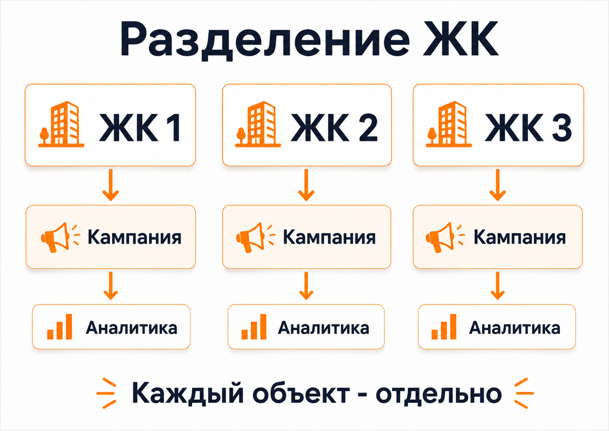

Блог о платном трафике
Реклама квартир в новостройке: как привлекать покупателей и получать заявки

Реклама квартир в новостройке работает лучше, когда каждый объект рассматривается как отдельный продукт. У разных ЖК отличаются расположение, цены, планировки, срок сдачи, способы покупки и аудитория. Если объединить всё в одну рекламную кампанию и вести людей на общую страницу застройщика или агентства, часть бюджета будет расходоваться без понятного результата.
В проектах по недвижимости я обычно выстраиваю связку из Яндекс Директа, отдельной посадочной страницы или страницы объекта, Яндекс Метрики, отслеживания звонков и дальнейшей квалификации обращений. При этом смотрю не только на стоимость заявки, но и на то, какие ЖК, аудитории и рекламные кампании приводят потенциальных покупателей.
Сначала нужно разделить спрос между объектами
Если продается один жилой комплекс, структура относительно простая: можно разделить аудиторию по типам квартир, стоимости, расположению, сроку сдачи и другим характеристикам.
При продвижении сразу нескольких ЖК появляется другая задача. Один объект может хорошо продаваться по общим запросам, другому требуется отдельный оффер, а третий способен получать мало обращений даже при нормальной рекламе из-за самого предложения.
У меня был проект по продаже небольших студий сразу в нескольких московских ЖК. Брендового спроса по конкретным комплексам было немного, поэтому значительная часть аудитории приходила по более общим запросам о покупке студии и небольшой квартиры в Москве.
Каждый ЖК продвигался отдельно. Это позволяло видеть расходы, заявки и звонки по конкретным объектам. Средняя стоимость заявки с формы составила 528 ₽, но разброс между объектами был большим - от 300 до 5000 ₽. Средний звонок обходился в 2771 ₽. Один из ЖК конвертировал заметно хуже остальных, хотя рекламные настройки использовались сопоставимые.
Это хорошо показывает специфику недвижимости: реклама не способна полностью компенсировать слабый продукт. Если объект проигрывает конкурентам по цене, расположению или другим значимым параметрам, его нельзя оценивать по тем же нормативам, что и более привлекательные ЖК.
Внутренняя ссылка: кейс «Продажа студий в Москве».
Какие каналы использовать для рекламы новостройки
Для получения заявок я в первую очередь рассматриваю Яндекс Директ. Внутри него Поиск и РСЯ решают разные задачи.
Поиск Яндекса
Поисковая реклама работает с уже сформированным спросом. Человек сам вводит запрос о покупке квартиры, студии, жилья от застройщика или недвижимости в конкретном районе.
Здесь можно работать с запросами разных уровней:
- покупка квартиры в новостройке;
- квартира от застройщика;
- студия или однокомнатная квартира;
- квартира рядом с определенным метро или районом;
- название конкретного ЖК;
- запросы по способу покупки, например trade-in.
Чем ближе запрос к конкретному объекту и намерению купить, тем проще связать объявление с подходящей страницей.
Проблема заключается в ограниченном объеме такого спроса. Если комплекс малоизвестный, брендовых запросов может практически не быть. Поэтому одного поиска часто недостаточно для получения нужного количества обращений.
РСЯ
Рекламная сеть Яндекса позволяет работать с более широкой аудиторией и показывать объявления за пределами поисковой выдачи.
Здесь намного сильнее влияет креатив. Пользователь в момент показа может вообще не искать квартиру, поэтому изображение и предложение должны быстро объяснять, что именно ему предлагают.
Для новостройки на креатив можно выносить:
- стоимость квартиры или минимальную цену;
- расположение;
- срок сдачи;
- готовность дома;
- планировку;
- условия покупки;
- конкретное преимущество ЖК.
Не нужно пытаться поместить в одно объявление все характеристики комплекса. Лучше подготовить несколько понятных рекламных гипотез и сравнивать их по обращениям.
Подробнее сам принцип работы сетей я разбираю в статье «Что такое РСЯ в Яндекс Директ».
Внутренняя ссылка: статья о РСЯ.
Повторная реклама для посетителей сайта
Квартиру редко выбирают после одного посещения сайта. Пользователь сравнивает несколько объектов, изучает планировки, возвращается к ценам и обсуждает покупку с семьей.
Поэтому отдельный сегмент можно строить вокруг людей, которые уже взаимодействовали с сайтом: смотрели конкретный ЖК, посещали страницы квартир или совершали другие значимые действия.
Задача такой рекламы - вернуть потенциального покупателя к объекту и дать еще один повод рассмотреть предложение.
Какой должна быть посадочная страница квартиры или ЖК
Ошибка, которую я регулярно вижу в рекламе недвижимости - отправлять весь трафик на главную страницу большого сайта.
Человек кликнул по объявлению конкретной новостройки, а после перехода снова должен искать ее среди десятков разделов. Каждый дополнительный шаг снижает вероятность обращения.
На странице рекламируемого объекта пользователь должен быстро найти:
- где находится ЖК;
- какие квартиры доступны;
- цены или понятный ориентир стоимости;
- планировки;
- срок сдачи и состояние объекта;
- фотографии или визуализации;
- условия покупки;
- информацию об инфраструктуре;
- форму заявки и телефон.
Структура зависит от конкретного объекта. Для готового ЖК могут хорошо работать реальные фотографии и возможность записаться на просмотр. На ранней стадии строительства большее значение получают концепция проекта, будущая инфраструктура, планировки и условия приобретения.
В статье «Что такое лендинг в Яндекс Директе и какой сайт выбрать для рекламы» я подробнее разбираю связь между рекламным объявлением, посадочной страницей и заявкой.
Внутренняя ссылка: статья о лендингах для Яндекс Директа.
Отдельный лендинг иногда работает лучше большого сайта
Это хорошо видно на моем проекте по trade-in недвижимости.
У клиента уже был многостраничный сайт, который использовался для SEO. Для платного трафика сделали отдельный лендинг под обмен старой квартиры на жилье в новостройке. Убрали лишнюю навигацию, сфокусировали страницу на одном сценарии и добавили квиз.
В результате стоимость заявок держалась примерно в диапазоне 1500-2007 ₽, а основной объем обращений приходил через квиз.
Старый сайт при этом не пришлось переделывать или отключать. Он продолжил решать свою задачу в поисковом продвижении, а рекламный трафик получил отдельную воронку.
Для рекламы квартир этот подход особенно полезен, когда застройщик или агентство продает много разных объектов и общий сайт перегружен информацией.
Внутренняя ссылка: кейс «Агентство недвижимости, Trade-in».
Какие офферы использовать в рекламе квартир
Само сообщение «продаются квартиры в новостройке» редко помогает выделиться среди других предложений. Рекламное объявление должно давать конкретную причину открыть страницу.
Оффер можно строить вокруг характеристик объекта:
- определенной цены;
- конкретной планировки;
- расположения;
- готовности дома;
- отделки;
- срока сдачи;
- формата жилья;
- инфраструктуры;
- условий покупки.
Если у застройщика действительно есть специальные программы покупки, их стоит выделять отдельно. Например, trade-in позволяет работать с людьми, которым сначала нужно решить вопрос с уже имеющейся недвижимостью.
В таком случае это фактически отдельная аудитория со своим запросом, рекламным сообщением и посадочной страницей.
При этом я бы не придумывал искусственные акции только ради повышения CTR. Сильное рекламное сообщение начинается с реального преимущества объекта.
Аналитика должна быть настроена по каждому ЖК
Считать общую стоимость лида по всему портфелю недвижимости недостаточно.
Пример:
ЖК | Расход | Заявки | CPL
Объект А | 100 000 ₽ | 50 | 2000 ₽
Объект Б | 100 000 ₽ | 20 | 5000 ₽
Объект В | 100 000 ₽ | 40 | 2500 ₽
Объект Г | 100 000 ₽ | 10 | 10 000 ₽
Средний показатель скрывает огромную разницу между объектами. Без такой детализации сложно понять, куда переносить бюджет и какой ЖК требует изменений.
Я отслеживаю как минимум:
- заявки с форм;
- звонки;
- стоимость обращения;
- источник обращения;
- рекламируемый объект;
- качество лида.
Если есть CRM, полезно передавать дальше статус обращения: квалифицированный лид, запись на просмотр, посещение офиса, бронь, сделка.
Самый дешевый лид не всегда оказывается самым ценным.
В проекте со студиями для контроля звонков использовался UIS. Благодаря этому заявки с форм и телефонные обращения можно было оценивать отдельно и видеть реальную ситуацию по каждому ЖК.
Подробнее сам показатель конверсии разбираю в статье «Конверсия в Яндекс Директ: что это и как ее считать».
Внутренняя ссылка: статья о конверсии в Яндекс Директ.
Почему нельзя постоянно останавливать рекламу
Алгоритмам рекламной системы требуется статистика. Постоянные остановки усложняют оптимизацию кампаний.
С этой проблемой я столкнулся в проекте по продаже коммерческих помещений в ЖК «Ватутинки Парк». Клиенту требовалось получать не более 15 лидов в месяц. Когда лимит достигался, рекламу приходилось приостанавливать.
Несмотря на это, стоимость обращения удалось снизить примерно с 6000 до 1700 ₽, но регулярные паузы ограничивали возможности дальнейшей оптимизации.
Для квартир ситуация похожая. Если отдел продаж физически не способен обработать дополнительный объем обращений, проблему лучше решать планированием бюджета и загрузки, а не хаотичными включениями и выключениями кампаний.
Внутренняя ссылка: кейс «Коммерческая недвижимость, ЖК Ватутинки Парк».
Основные ошибки при продвижении квартир в новостройках
Все ЖК объединены в одну рекламную кампанию
В результате сложно понять реальную стоимость обращения по конкретным объектам и управлять бюджетом.
Реклама ведет на общую главную страницу
Объявление обещает конкретную квартиру или ЖК, а пользователь после клика попадает в каталог и начинает искать предложение заново.
Объекты оцениваются только по количеству заявок
Нужно учитывать качество обращений. Особенно если разные рекламные сегменты дают сильно отличающуюся долю реальных покупателей.
Не учитываются звонки
В недвижимости часть аудитории предпочитает сразу позвонить. Если учитывать только формы сайта, картина эффективности будет неполной.
Слабый объект пытаются исправить только настройками Директа
Иногда проблема действительно находится в рекламе. Но бывает, что предложение проигрывает конкурентам, и дополнительная оптимизация кампании уже не дает заметного эффекта.
Бюджет распределяется равномерно
Если один ЖК стабильно получает качественные обращения дешевле другого, одинаковые бюджеты могут быть экономически нелогичны.
Как я бы запускал рекламу квартир в новом ЖК
Сначала я разбираю сам объект и предложение: расположение, стоимость, планировки, конкурентов, способ покупки и предполагаемую аудиторию.
Дальше последовательность выглядит так:
1. Определить основные сегменты спроса.
2. Решить, какие ЖК и типы квартир нужно разделить.
3. Проверить посадочные страницы.
4. Настроить Яндекс Метрику и фиксацию звонков.
5. Подготовить отдельные рекламные предложения.
6. Запустить Поиск и РСЯ.
7. Собрать первые данные по заявкам и их качеству.
8. Перераспределять бюджет между рабочими и слабыми связками.
9. Передавать в рекламу более качественные данные из воронки по мере их накопления.
Сама настройка Яндекс Директа в 2026 году подробно разобрана у меня в отдельной инструкции.
Внутренняя ссылка: статья «Как настроить рекламу в Яндекс Директ в 2026 году».
Сколько стоит реклама квартиры в новостройке
Универсальной стоимости заявки для этой ниши нет.
На результат влияют:
- регион;
- класс жилья;
- стоимость квартир;
- узнаваемость ЖК;
- объем существующего спроса;
- конкуренция;
- посадочная страница;
- предложение;
- качество отдела продаж;
- рекламный бюджет.
Даже внутри одного проекта цена обращения по разным объектам может отличаться в несколько раз.
Мои собственные кейсы это подтверждают. В проекте со студиями средняя заявка с формы стоила 528 ₽, в направлении trade-in она находилась примерно в диапазоне 1500-2007 ₽, а в проекте с коммерческими помещениями стоимость обращения после оптимизации была около 1700 ₽.
Использовать эти цифры как прогноз для другого застройщика нельзя. Они относятся к конкретным проектам, периодам и предложениям.
Перед запуском можно оценить объем поискового спроса и примерную стоимость трафика, после чего построить несколько сценариев по конверсии сайта.
Внутренняя ссылка: статья «Прогноз бюджета Яндекс Директ: как рассчитать расходы, клики и заявки».
Что в итоге влияет на результат
Эффективная реклама квартир начинается еще до создания объявлений.
Нужно понимать, какой объект продвигается, кому он подходит, почему покупатель должен рассмотреть именно его и куда человек попадет после клика. Затем этот путь необходимо связать с аналитикой, чтобы видеть реальные заявки и качество обращений по каждому ЖК.
По моему опыту в недвижимости особенно важны три вещи: разделение объектов, сильная посадочная страница и учет реального качества лидов. Настройки рекламного кабинета уже работают внутри этой системы, а не отдельно от нее.
Внутренняя ссылка: главная страница сайта с услугами и другими кейсами по недвижимости.